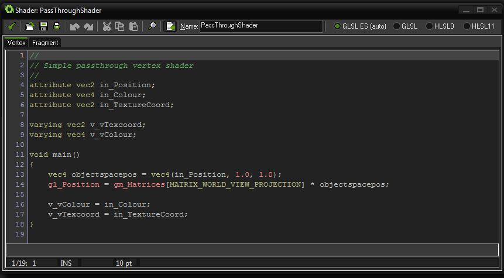

Shaders
A shader is a set of two short scripts that permit you to tap directly into the graphics pipeline and change how things are drawn.
Shaders are a very powerful tool that can be used to manipulate the graphics that your game renders to the screen, permitting incredibly fast effects that can range
from, for example, adding a subtle colour hue to a sprite, right up to full screen distortion effects.
What Is A Shader?
A shader is basically a two-part program that runs directly on the graphics card itself, making it very fast since the GPU is doing all the work and freeing up CPU cycles
for your game code.
The full shader is comprised of a vertex shader program, and a fragment shader program (also known as a pixel shader). Both of
these tiny programs work together in order to manipulate what the graphics card renders to the screen. This then permits you to manipulate in real time, the position,
colour and alpha values that are actually rendered into the display buffer.
A complete overview of how shaders really work and what place they have in the graphics pipeline is outside the scope of this manual, but YoYo Games
have produced a number of Tech Blog articles which give an excellent base to start from:
The Shader Editor
The shader editor has the exact same functionality as the Script Editor, with auto-complete, search, print, etc... as well as all the same
keyboard shortcuts. However, please note that there is no syntax checking, due to the code being written using the specific shader language and not GML.

The code editor itself is split into two sections, with each one being available from tabs at the top. This is because you cannot create a shader without both
parts. Even if you wish to only use the fragment shader you will have to have created a "pass through" vertex shader (by default any new shader being created will
have a vertex and fragment pass through shader already coded for you).
The shader program itself is written in a shader language with the default, cross platform choice being GLSL ES. Using this language guarantees
that your game will work correctly on all platforms that shaders are available on, but you can also choose to use one of three other languages if you are only
targeting a specific platform. The available languages and their respective targets are shown in the table below:
| Shader Language | Target Platform |
|---|---|
| GLSL ES | All target platforms except Windows 8 (JS) |
| HLSL9 | Windows 32 only |
| HLSL11 | Windows 8 (Native only) and Windows Phone |
| GLSL | Mac and Ubuntu (Linux) |
It is worth noting that you can use GLSL ES shaders on the HTML5 target platform but you must have enabled WebGL in the
HTML5 Global Game Settings otherwise it will not work.
For further details on the shader functions and how they can be used in GameMaker:Studio please see the section
Reference: Shaders.
NOTE: This manual will not cover any of the Open GL shader functions and variables, unless they are special ones that exist ONLY in
GameMaker:Studio (which can be found here. For a complete overview of the
available GLSL ES functions and variables please see the
OpenGL ES Shading Language (GLSL ES) Reference
Pages.